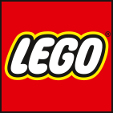
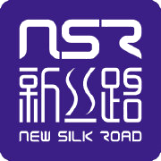
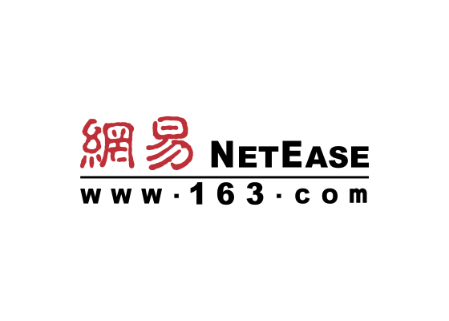
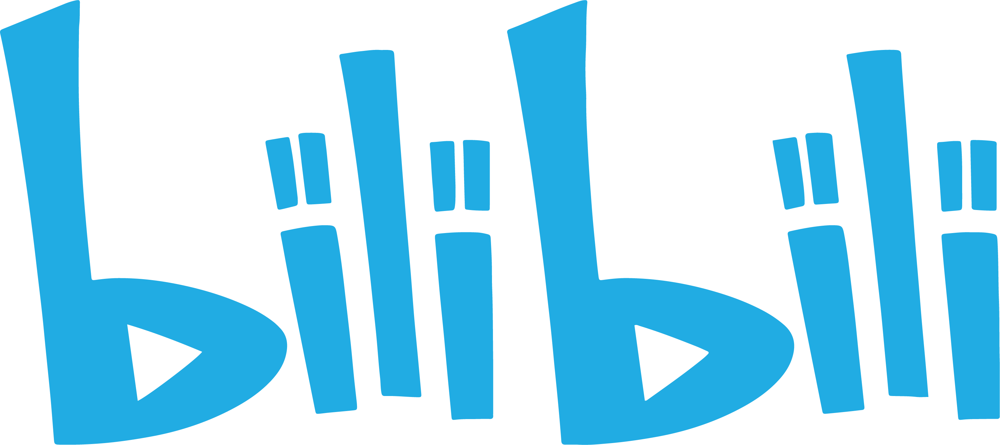

01
GEO / AI SEARCH VISIBILITY
GEO
AI 搜索可见度
让品牌在 AI 搜索与问答中被准确理解、优先引用，成为客户提问时的答案之一。
- AI 搜索可见度评估
- 品牌问答与引用优化
- 持续监测与迭代
PALLAS GROUP / INTELLIGENCE × INDUSTRY
当客户开始向 AI 提问，品牌的位置就是新的入口。智神 AI 以 AI Native 的方法，帮助企业把经验与品牌知识转化为 AI 能读懂、愿引用的内容，让合适的客户找到你。
01 / SERVICES
用户获取信息的方式正在从搜索转向提问。智神 AI 以 AI Native 的思路重构品牌的内容与知识，提升在 AI 搜索中的可见度与引用质量，把关注转化为真实的商机。
GEO / AI SEARCH VISIBILITY
让品牌在 AI 搜索与问答中被准确理解、优先引用，成为客户提问时的答案之一。
GROWTH / ACQUISITION
把 AI 带来的关注与咨询接住，沉淀为清晰的线索与可持续的客户来源。
BRAND / KNOWLEDGE
把企业的经验、案例与专业判断整理为结构清晰、可被 AI 理解和调用的内容资产。
AI NATIVE / STRATEGY
以 AI Native 的视角看待品牌与增长，明确在 AI 时代该被谁看见、以什么方式被记住。
02 / HOW WE WORK
围绕品牌在 AI 搜索与获客上的一个明确目标，按诊断、内容、发布、监测逐步推进，让可见度变化看得见。
ALIGNMENT
确认品牌定位、目标客户与期望成效，建立共同的项目起点。
PILOT
了解品牌当前在 AI 搜索与问答中的呈现，找出最值得优先改善的位置。
DELIVERY
梳理品牌知识，产出结构清晰、便于 AI 理解与引用的内容。
ADOPTION
把内容布局到合适的渠道，并设计咨询与线索的承接路径。
REVIEW / SCALE
持续观察可见度与线索变化，复盘调整，并把有效方法延伸到更多业务。
03 / INDUSTRY FOUNDATION & PROJECTS
智神长期服务于城市更新、产业园区、商业空间与企业运营。理解现场、运营和多方协同，是我们理解客户、做好品牌与获客的行业底座。
A / CONSULTING
从区域发展和产业定位出发，进行城市更新、历史街区活化、文旅与商业项目策划。
城市更新 产业规划 文旅策划B / OPERATIONS
把空间产品、招商策略、产业导入与日常运营连接起来，推动园区和商业空间持续运转。
产业园区 创意社区 招商运营C / ENTERPRISE
围绕企业成长提供投融资顾问、税务咨询、人力资源管理、品牌推广与新媒体运营。
品牌传播 内容营销 企业配套行业项目经验 SELECTED EXPERIENCE
结合经营数据与历史产业背景，提出产业升级和街区活化策略。
围绕夜经济招商与产业导入，完善街区动线和运营配套。
通过特色空间产品和产业导入，推动园区活化与租值提升。
围绕品牌、景点营销、智慧旅游平台和融媒体中心提出整体方案。
依托清代古建筑打造文化创意社区，九维（Jumpwire）目前也在园区内。
位于南沙明珠湾的近期飞行营地项目实践。
以客家文化为特色，构建片区体验与商业运营方案。
基于古村风貌与非遗文化资源，提出片区定位和活化构想。
参与新津区乡村振兴项目策划。
以前置招商和龙头招商导入新能源汽车产业链与多元空间。
依托教育资源和低密度空间，导入科创文创及总部型企业。
以孵化器、众创空间和加速器构建科技企业培育服务体系。
盘活低效存量空间，建设面向智能硬件产业的创新园区。
通过旧改推动产业升级，导入设计与直播企业形成园区生态。
保留牙膏厂历史痕迹，打造融合创意、艺术与办公的空间。
将旧造纸厂空间转型为融合办公、教育、文体与休闲的创意聚合体。
提供传播策略、执行策划、文稿撰写和媒体投放支持。
通过公众号内容与营销活动拓展品牌触达，促进内容向电商转化。
合作客户 · 园区企业 · 产业生态
PARTNERS & ECOSYSTEM




PALLAS AI / BUILD TO GROW
从 AI 搜索可见度出发，沉淀品牌知识与内容，把关注转化为持续的客户来源。